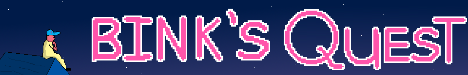
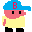

A depraved witch threatens the land. Bink must go on a quest to defeat her and free the land from her clutches.
Controls:
Arrow keys: Movement
X: Bink Blast.
This is a game I made for the Acerola Jam 0 on itch.io. I made it over the course of 2 weeks. It is written in C. I used SDL2 and emscripten to create a playable web version. Here is the link to the its itch.io page.
You can check out the source code too, but it is pretty messy.
Listen to the OST!
Back to games